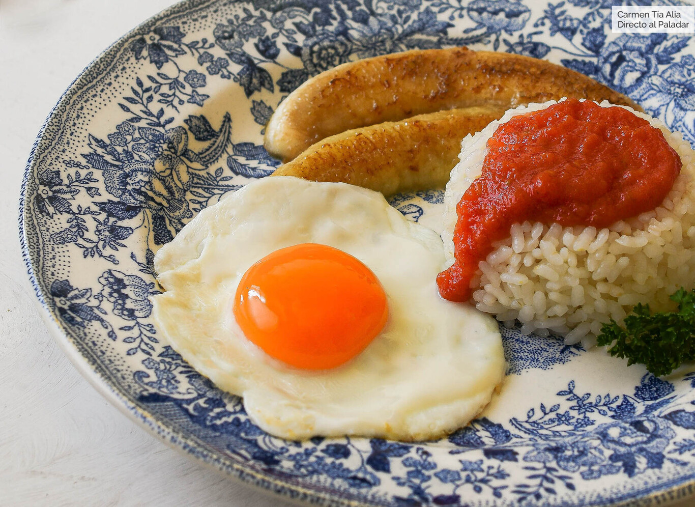

- Videojuegos
- Series
- Peliculas
- Mujeres
- Mas Mujeres
- Hamburguesas
- Pizza
- Pasta
- Fajitas
- Mujeres
- Teclado
- dispositivo de entrada que utiliza una disposición de teclas
- Mouse
- dispositivo de entrada diseñado para manipular objetos en la pantalla de la computadora
- Monitor
- es el principal dispositivo de salida (interfaz), que muestra datos o información a todos los usuarios.
- Mando
- dispositivo de entrada usado para interactuar con un videojuego ya sea en una consola o en un ordenador.
- Consola
- Dispositivo electrónico que, conectado a una pantalla, permite jugar con videojuegos mediante mandos apropiados.
- Pizza
- Masa
- tomate
- queso
- peperonni

- Hamburguesa
- Pan
- carne
- queso
- tomate
- lechuga

- Arroz a la cubana
- Arroz
- huevo
- Una cubana
- 